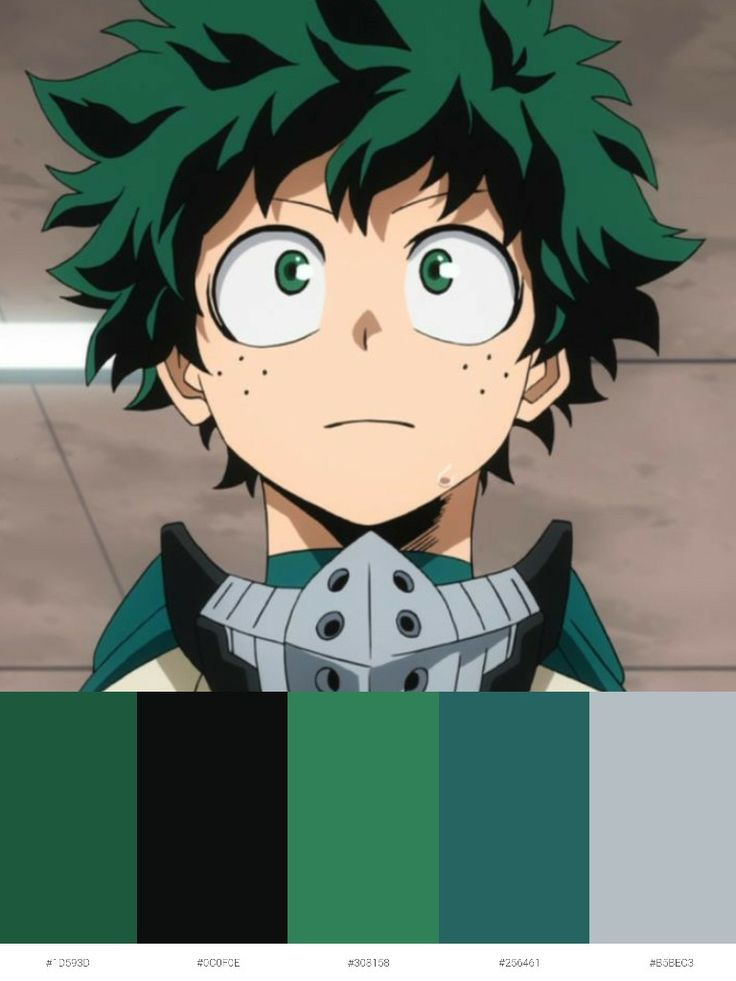
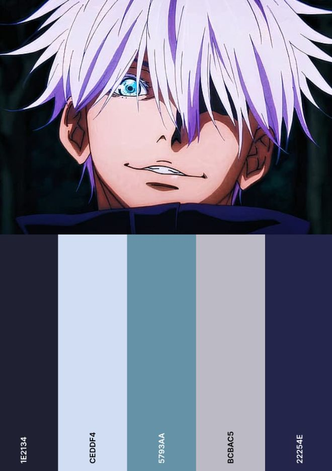
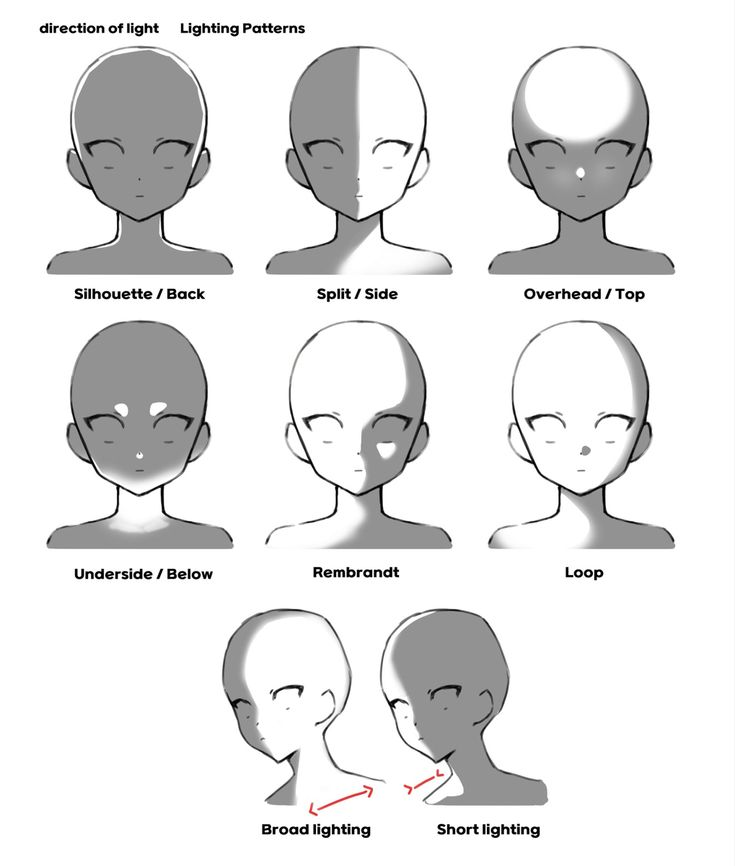
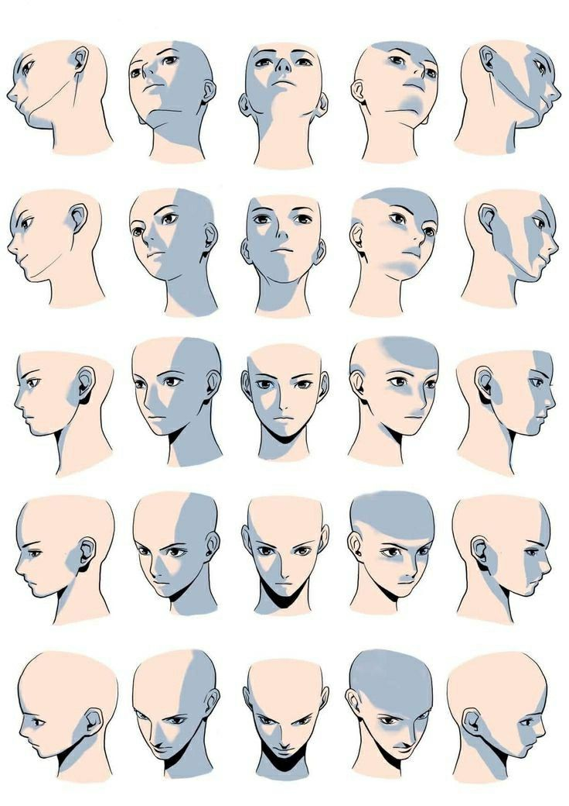
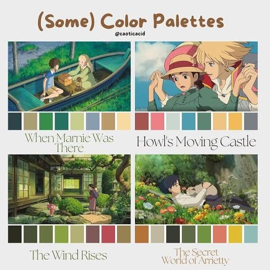

Understanding Color in Anime
Color sets the mood, emotion, and style in anime artwork.
Color Theory Basics
Color theory is the study of how colors work together. In anime art, however, artists normally use complementary colors (opposites on the color wheel) to create a unique contrast and make characters stand out.
Colors can represent many tones when it comes to art. Warm colors like red, orange, and yellow often represent energy, passion, or danger, while cooler colors like blue and purple often represent calmness, mystery, or sadness.

Image by russlandoficial (Pinterest)

Image by newerplayl (Pinterest)
Shading & Lighting
Shading adds depth that helps generate a character's tone and makes them seem more realistic. Anime often uses soft shading with smooth gradients instead of hard shadows.
Lighting is used to create a mood. Bright lighting can show expression or action scenes, while darker lighting can create suspense or emotional moments.

Image by N/A (Pinterest)

Image by incognito_18 (Pinterest)
Color Tips for Anime Artists
It is best to use a limited color palette when making a character to keep the designs clean and consistent.
Avoid using too many bright colors at once to not distract from the character.
Be sure to always test how colors look together before completely finalizing your artwork.

Image by N/A (Pinterest)